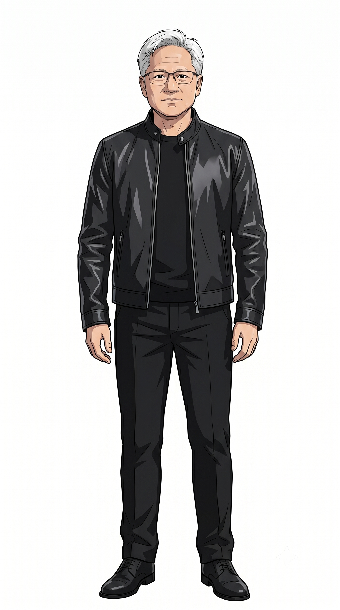

黃仁勳談生死意識、知識傳承，與對 AI 時代人類未來的樂觀想像
這場訪談的核心不只是黃仁勳談「怕不怕死」，而是把死亡意識轉化成一套非常務實的領導方法。他不把接班視為某個指定人選的問題，而是視為每天、每場會議、每次互動中持續發生的知識傳承工程。
在黃仁勳眼中，NVIDIA 所處的 AI 時代不是一般職涯高峰，而是「人類級別」的歷史時刻。因此他對生命有限性感到急迫，但這份急迫沒有變成焦慮，反而變成更快速地分享判斷、提升團隊能力、推動技術向前的動力。
他明確承認不想死，原因不是恐懼本身，而是因為自己有美好的家庭、重要的工作，以及正在經歷罕見的科技轉折點。
真正的接班部署，是把知識、資訊、洞察、技能與經驗盡可能即時傳給團隊，而不是把所有關鍵能力集中在 CEO 身上。
他把每場會議都當成「推理會議」，透過公開推理讓團隊看見決策如何形成，藉此提升整體組織判斷力。
他相信人類具有善意、慷慨與同理心，也相信 AI 與科學進展會讓疾病、污染、生命延展與意識理解等難題變得更接近可解。
黃仁勳說自己不想死，表面上是對死亡的反應，實際上更像是對「還在進行中的責任」的回應。他的生命價值感不是抽象的成功，而是具體的人際連結與正在推進的技術事業。
這段話的張力在於，他同時承認個人生命的有限，也把個人的有限放進人類技術演進的長時間尺度裡。這讓他的語氣不是單純的悲觀或豪語，而是一種「我還有太多事情要完成」的急迫感。
他提到自己常說不相信接班規劃。這句話容易被誤解為缺乏準備，但他後面的說法其實重新定義了接班：持續把 CEO 的判斷方式、資訊來源、技能與經驗擴散到組織內。他的接班邏輯是「能力分散化」而不是「權力指定化」。
黃仁勳在公司內外的每一刻都盡快把知識傳出去，甚至在自己還沒完全學完之前，就會把有價值的新資訊丟給合適的人。「會議是推理會議」是這段影片最值得管理者借鏡的觀點。
談到未來時，黃仁勳先談的不是晶片、模型或市場，而是人類的善意、慷慨、同理心與助人傾向。他的科技樂觀不只來自算力曲線，而是來自對人類會用工具解決問題的信念。
他說這是一個讓人無法不浪漫的時代，並不是空泛的情緒，而是因為技術能力讓更多問題從哲學想像進入工程問題：疾病終結、污染大幅降低、機器人探索太空、人的資料與 AI 形象被保存與延伸。
「因為生命有限，所以知識必須流動；因為時代重大，所以能力必須擴散；因為未來可期，所以現在更要加速行動。」
— 黃仁勳的領導哲學，整理自 Yaay World 訪談 · 2026